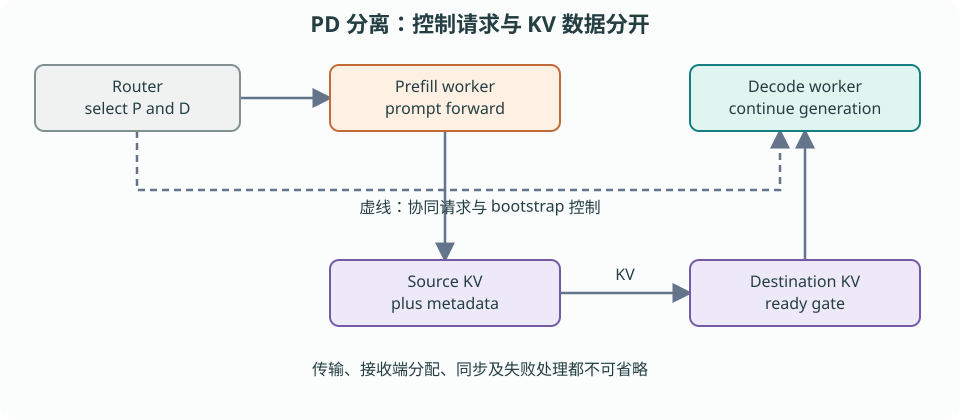
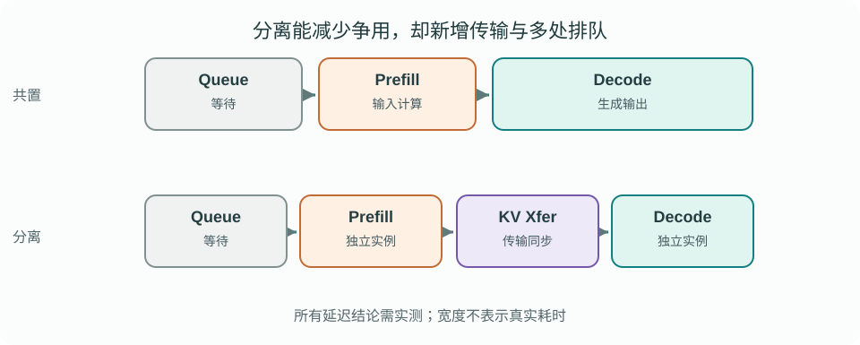

第 05 章 · 分布式部署
Prefill–Decode Disaggregation：为什么要分开两个阶段？
拆开 Prompt 计算与逐 token 生成，追踪 KV 传输、排队与成本边界。
Prefill 通常涉及大量输入 token 的并行计算，Decode 则在长时间内反复执行单步增量计算。它们使用硬件资源的方式不同，合并部署可能发生干扰；分离部署提供独立扩缩容和调度的可能，同时引入新的 KV 传输链路。
读完本章，你应该能
- 画出 Prefill worker 与 Decode worker 之间的 KV 状态迁移。
- 写出单次请求的关键路径成本模型并指出何处能重叠。
- 判断何时应测试 P/D 分离而不是默认假设更快。
1. 逻辑阶段不等于分布式拓扑
即使只有一张 GPU 和一个 serving worker，生成仍然需要 Prefill 和 Decode 两个逻辑阶段。这是模型计算结构决定的。P/D Disaggregation 指的是在部署上为不同阶段设置不同 worker 或资源池；改变的是执行位置、KV 迁移方式与资源隔离，而不是把 Prefill 从模型中删掉。
共置时同一组计算资源处理两类请求；分离后可分别对 Prefill/Decode 优化吞吐或尾延迟，但同时多出中间状态搬运。上游 P/D 官方文档 是具体配置和通信后端的首选依据。
2. 从 Router 走到 KV Buffer：完整画出数据流
路由层选取 Prefill/Decode 实例，协同发送请求与 bootstrap metadata；KV tensor 在 worker 之间交付而不是通过 Router 搬运。Prefill 产生的 K/V 必须可被 Decode 实例用于后续注意力；因此，相关 KV 和必要的元数据需要以兼容格式传递。Decode 负责继续生成并返回输出流。

真实部署可能是多个节点、多副本、多 rank，通信可通过不同传输后端实现；上图只强调不可删除的依赖。不要把网络传输画成“从 GPU 直接得到下一个 token”的捷径。
3. 为什么分离不意味着 TTFT 自动下降？
从同一请求内各阶段也无重叠的串行关键路径出发，可将请求总耗时拆为排队、Prefill、KV 传输、Decode 和返回网络开销：
不同系统可能把网络返回时间计入不同指标，并在不同请求之间流水线重叠；因此这个式子只是思考成本构成的加性教学模型，不是所有系统的精确计时公式。分离的关键收益假设是减少两类负载之间的争用、允许差异化扩缩容，而增加的成本包括传输、同步、额外队列与资源维护。

串行 toy：排队2ms、Prefill 8ms、KV transfer 3ms、Decode 20ms、网络2ms，则 E2E≈35ms；有重叠须按实际关键路径而非简单相加。固定版本 Decode allocation policy 默认 early；prefill_complete 延后预留但限制后端/并行配置，并取消 chunk/transfer overlap。参第17章。
4. KV 传输为什么是正确性问题，而不仅是带宽问题？
Decode 继续处理相同序列时需要与 Prefill 计算兼容的缓存：层数、head 结构、dtype、位置编码状态、缓存布局与模型权重配置必须匹配。分布式 worker 的 KV 地址和生命周期不能只依靠“两个实例模型名字一样”保证安全。
工程上需要确定谁负责分配接收端 KV slots、谁发起 transfer、失败或超时如何恢复、请求取消时如何释放，以及传输完成之前是否允许 decode 访问。官方 P/D 文档讨论了相应架构与实现；具体协议配置必须对照运行时版本。
5. 拆分后应该如何分配资源？
Prefill pool 可面向长输入与吞吐优化，Decode pool 可面向逐 token 延迟与服务稳定性优化。路由必须同时考虑队列长度、KV 传输容量、模型分片、缓存命中、请求的估计输入/输出长度和 worker 可用性。错误的资源配比可能让一个池排队很长，另一个池空闲。
在 MoE、长上下文、多模态编码等场景下，阶段成本与通信拓扑进一步变化；不能用“Prefill 一定 compute-bound，Decode 一定 bandwidth-bound”来覆盖所有 batch 规模、模型与硬件。
6. 交互：对比两个部署路径的代价类别
下面切换的只是成本结构，不表示真实系统哪一个更快。
共置与分离部署路径
共置：单 worker 内部执行 Prefill 和 Decode：没有跨实例 KV transfer；可能存在 Prefill/Decode 资源争用。
P/D 分离：Prefill worker 产生 KV，经 transfer 和同步交付给 Decode worker；两类负载可分别调度和扩容。
传输受阻：若传输带宽不足、接收端 KV 不可用或队列积压，Decode 不能安全继续；端到端尾延迟可能变差。
7. 设计一个公平实验：测哪些量？
必须固定模型与 revision、tokenizer、硬件/互联、精度、输入输出长度分布、并发/到达率、缓存热度与请求成功率。分别报告 TTFT、ITL/TPOT、吞吐量、P95/P99、Prefill 与 Decode queue time、KV transfer 延迟及 worker 利用率。
对照实验清单（不是实测结果）：
A. 共置部署：固定模型、GPU 总资源、负载及 SLO
B. P/D 分离：尽量保持总 GPU 与模型资源可比
每种分别做 warm-up、cold/warm cache 和多次重复
报告成功请求 / 超时 / 失败，并绘制延迟分布
不要只挑选最高的吞吐数字做结论如网络与接收端部署不受信任，跨实例 KV 和内部控制通信应处于适当的认证与隔离边界中。推理服务还需考虑请求和日志中的敏感数据。只有实际跑过对应拓扑和负载，才能声称性能有所改善。
参考资料与版本边界
论文中的 2024 年设计不代表所有后续默认行为；源码链接固定到 0a8693fbe3a2（2026-11-23），需在升级后重新核对。示例状态与时间线不属于性能实测。